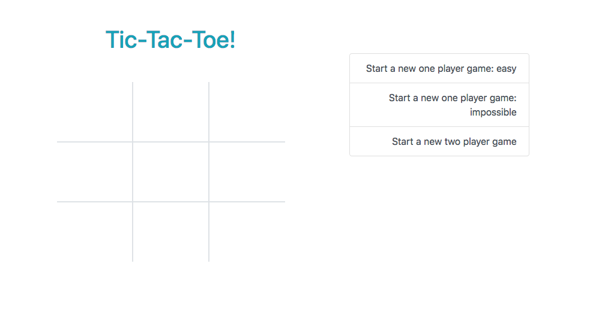

Aaron Kaswen-Wilk

Aaron Kaswen-Wilk

Aaron Kaswen-Wilk
Full Stack Web Developer
aaron.kaswenwilk@zoho.com
About Me

I’ve always considered myself a problem solver, whether it was a straightforward math problem from school, or a life problem to do with visas (funny story). When I discovered programming, it satisfied a need in me I hadn’t been able to fulfill in my career as an opera singer for some time. Opera had become memorizing words, music, and staging to the point where I could perform without a lot of thinking, no real new problems to solve. As a private music teacher, the best part of the job was figuring out the best way to communicate what my student needed to do in a way that they would understand and be able to execute it. With web development, I really felt a connection. I was surprised when I first began that I could sit in front of a computer for many hours at a time writing code. Solving complex problems and learning was very fun and therefore, the time would fly by. I still enjoy music of course, and I don’t regret any of the time I spent dedicating myself to learning piano and voice. Now, I’m especially excited to bring the skills and dedication I once brought to music to a new career path. Thus it is with pride and excitement that I refer to myself as a Ruby on Rails developer!
Portfolio
-

My Github Page
I am currently working on several projects. Some for fun, others as part of my course. Among other things, I invite you to check out the raw code for the projects below!
-

Stock Portfolio Backtester
I built this App based on my interest in investing. It allows you to generate investment portfolios with custom allocations of different stocks. It uses an api provided by iex to pull up to 5 years of history for each stock and calculates the average return for different periods of time. Open the app, create an account and give it a try! You can also review how successful others have been with their portfolios.
-

Video Organizer App
I built this for a client who has several hundred DVD’s split between two different DVD players. The app allows him to store the DVD machine and tray numbers for every disc. The discs are grouped into different categories by genre and store a picture of each disc via google cloud. I also built an upload program to load the app from files he already had.
-

Facebook Project
This functional Facebook clone provides social networking for all of its users. The app was my first foray into using devise with Ruby on Rails
-

Tic-Tac-Toe
I built this app with the Sinatra framework, although the functionality is pure vanilla javascript. There are three gameplay modes: single player vs easy computer, single player vs impossible computer, and two players. The impossible one player option is built adapting the minimax algorithm to javascript. Therefore, the computer can draw or win, but never lose. For the easy single player setting, the computer selects a random move. The two player setting allows two individuals to play against each other.